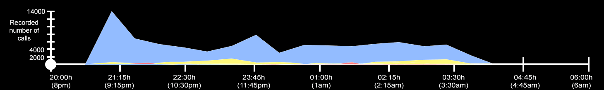
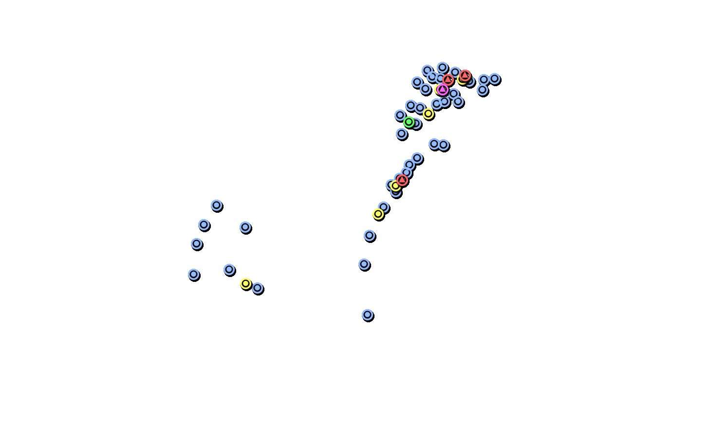
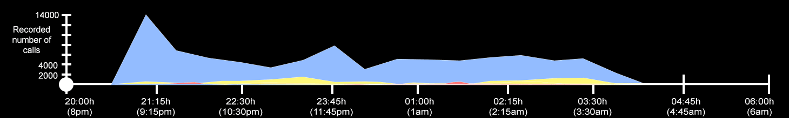
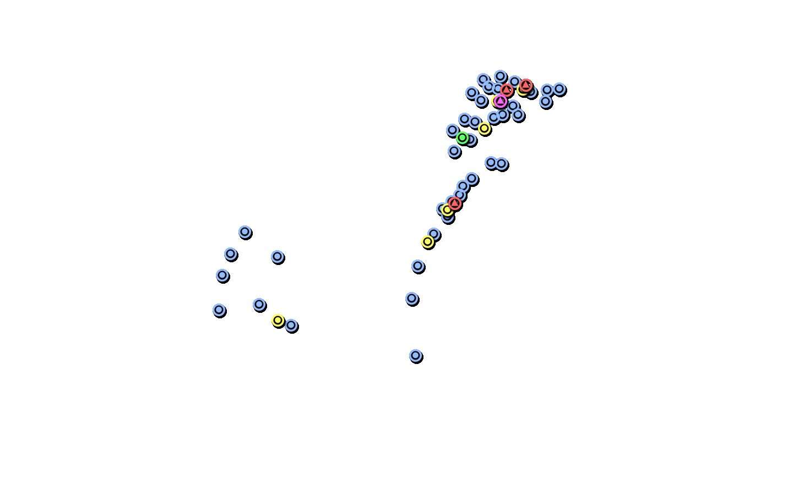

Myotis lucifugus
Myotis lucifugusMyotis septentrionalis
More Info ↓ (Scroll)
Myotis lucifugus & Myotis septentrionalis
Common names: Little Brown Bat & Northern Long-eared Bat
These two Myotis species represent small, high frequency calling bats that hibernate in caves during the winter months before switching to tree roosting sites for the summer. They are grouped together because their vocalizations are so similar that they cannot be reliably distinguished from one another using their call designs alone. Together, they have wingspans ranging from 22-27cm, they usually weigh between 5-14g, and their echolocation frequency range is typically 40-80kHz, though they have been known to produce frequencies of over 100kHz. On the Björklunden property, the Myotis species were the most active bats overall, producing more calls than any other species across the lodge, meadow, and cedar trail habitats, and more throughout all hours of the night. Like the other species, they allocated the majority of their activity around the lodge, where the open environment, vicinity to lake water, and concentration of artificial light provided the best foraging conditions for insectivorous bats. Sadly, these two prominent North American bat species are among the most at risk due to White-nose Syndrome, a fungal disease killing millions of bats in the U.S. and Canada. It is therefore even more important to acknowledge the role Björklunden property plays in supporting these species.
More Info ↓ (Scroll)
Lasiurus borealis
Common name: Red Bat
The Red Bat species is another small, high frequency calling bat. They grow to have wingspans of about 29-33cm and weigh 9.5-14g. Their echolocation frequency typically ranges from 35 to 70kHz. Red Bats were among the most active species at Björklunden, second only to the two Myotis species listed above. They produced the most calls in the habitat directly around the lodge, followed by the meadow and cedar forest habitats, respectively.
More Info ↓ (Scroll)
Perimyotis subflavus
Common name: Tricolored Bat
With a typical wingspan measuring between 21-26cm and a typical weight between 14-16g, the Tricolored Bat is among the smaller bat speices at Björklunden. They usually produce echolocation frequencies between 40 and 60kHz, which is considered a high frequency call. On Björklunden property, Tricolored Bats were among the more active species, though they produced relatively few calls as compared to the Myotis species. They, too, had the most calls in the lodge habitat, followed by the meadow and cedar trail habitats, respectively.
Lasionycteris noctivagans
More Info ↓ (Scroll)
Eptesicus fuscus & Lsionycteris noctivagans
Common names: Big Brown Bats & Silver-haired Bat
Unlike the species above, Big Brown and Silver-haired bats are larger, low-frequency calling bats. They are paired together because their vocalizations are too similar for them to be reliably distinguished using call design alone. Together, these bats have wingspans ranging from 27-33cm and typically weigh 8-16g. Their echolocation frequency range is 20-50kHz or lower. At Björklunden, they exhibited the most activity in the lodge habitat, followed by the meadow and cedar trail habitats, respectively. Overall, they produced far fewer calls in any given habitat than the smaller species listed above.
More Info ↓ (Scroll)
Lasiurus cinereus
Common name: Hoary Bat
Among the larger bat species residing on Björklunden property, the Hoary Bat has a typical wingspan of about 40cm and weighs roughly 26g. Paired with their larger size, is a lower-frequency echolocation call, ranging from 15-30kHz. In contrast to other species, the only recorded activity from Hoary Bats was found in the lodge habitat, where the open space and prey-friendly characteristics provided better conditions for the larger bat to maneuver in the air and forage. Overall, Hoary Bats accounted for the fewest number of calls produced across Björklunden.
 


